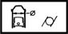

CYLINDER LINERS
- Path
- Technical Data > Manufacturing data > 10 ENGINE > 1012 ENGINE CRANKCASE > CYLINDER LINERS
- Kind
- technical data / specifications
- Applies to
- all engines; all production periods
- Interactive page
- https://sloeber94.github.io/elrnDB-fPnd/en/#/2751236
Applies to: all engines; all production periods
Cylinder bore diameter (mm) | Validity | |||
|---|---|---|---|---|
Class A | Class B | Class C | ||
70.000 - 70.010 | 70.010 - 70.020 | 70.020 - 70.030 | 1.1 | |
Cylinder bore ovalization (mm) | Validity |  | ||
< 0.05 | 1.1 | |||
Cylinder bore taper (mm) | Validity |  | ||
< 0.005 | 1.1 | |||
Cylinder liner oversize (mm) | Validity | |||
0.4 | 1.1 | |||